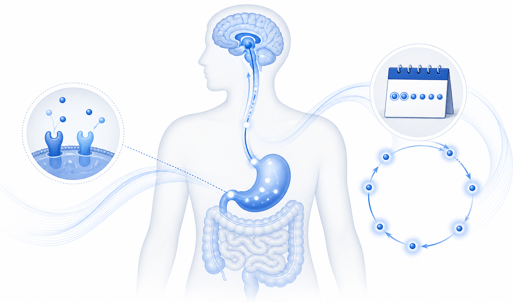
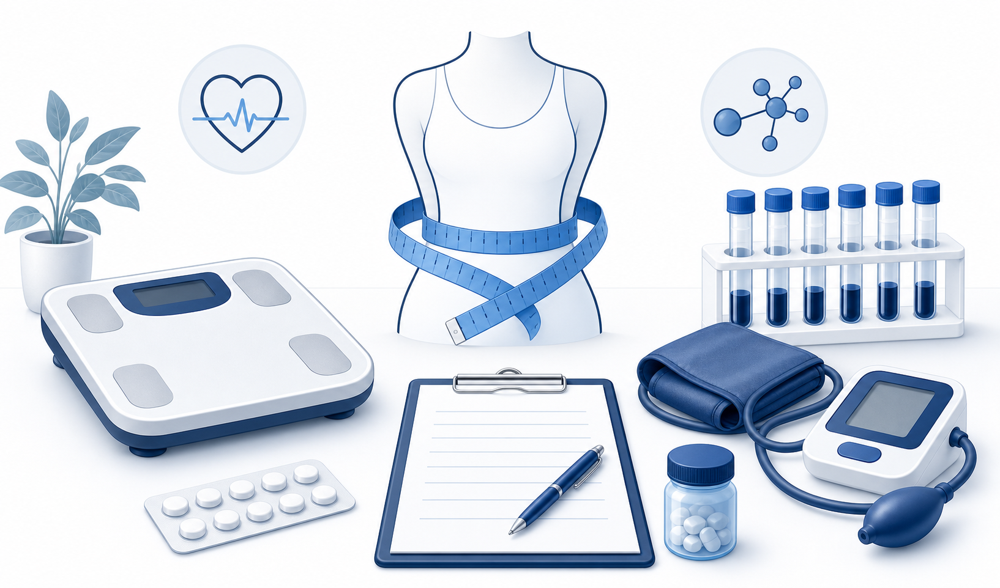
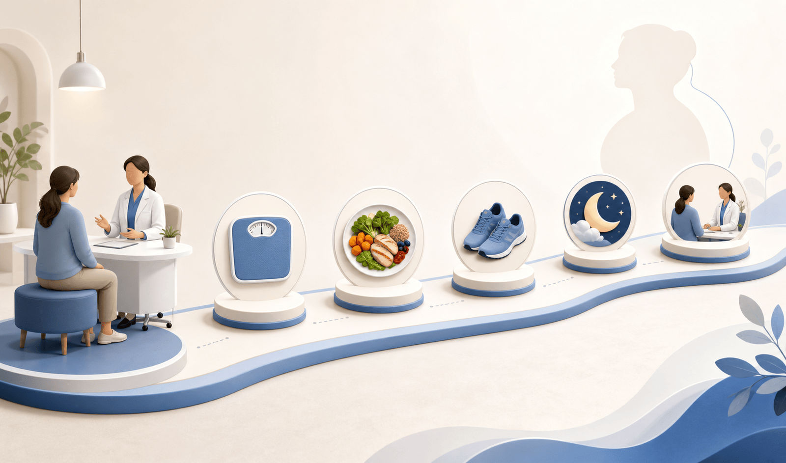

약이 식사량을 줄여 주더라도, 무엇을 먹고 어떻게 움직일지는 여전히 치료의 중심입니다

체중만 재면 반쪽입니다 — 허리둘레·혈압·혈액검사·복용약을 같이 봐야 안전합니다

빠르게 올리면 감량이 아니라 오심·구토·탈수로 이어질 수 있습니다
| 약 | 시작 용량 | 이렇게 올립니다 |
|---|---|---|
| 위고비 | 0.25 mg 주 1회 | 보통 4주 간격으로 올립니다. 유지 용량은 처방에 따릅니다 |
| 마운자로 | 2.5 mg 주 1회 | 4주 뒤부터 5 mg 이상으로 단계적으로 올리는 것을 고려합니다 |
치료의 성공은 몇 kg 감량보다, 줄어든 체중을 유지할 수 있는 생활 습관입니다

첫 주는 몸의 반응을 관찰하고 기준선을 남깁니다 · 집에서 볼 1장 요약: 시작 안내문